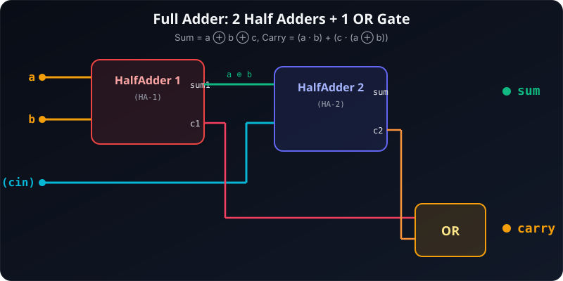
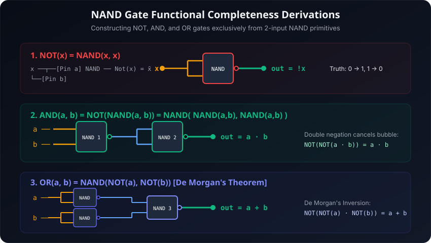
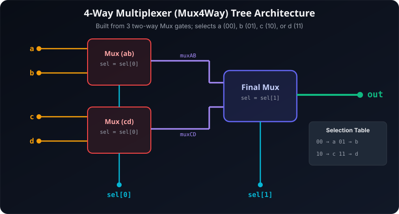
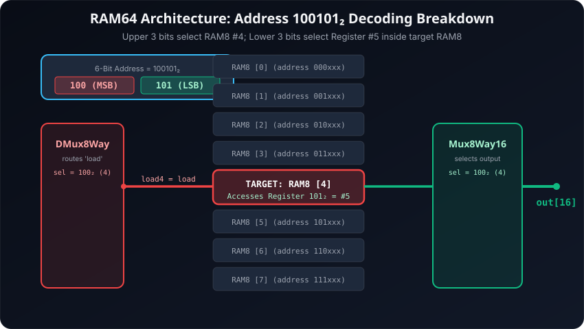
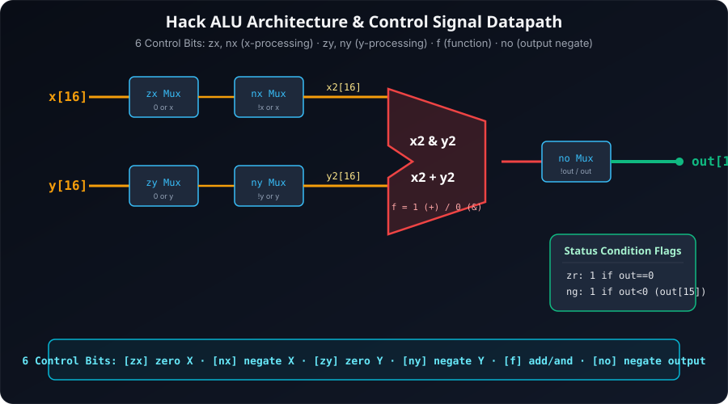
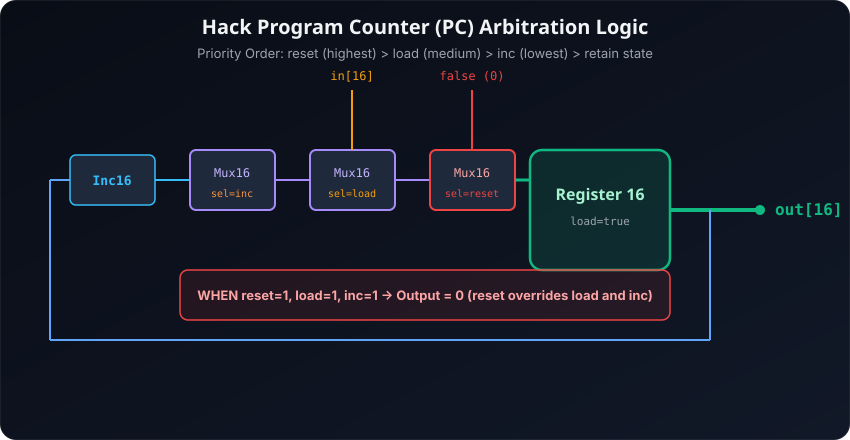
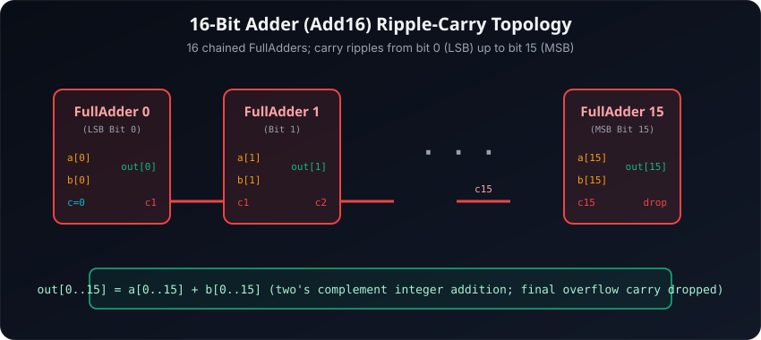
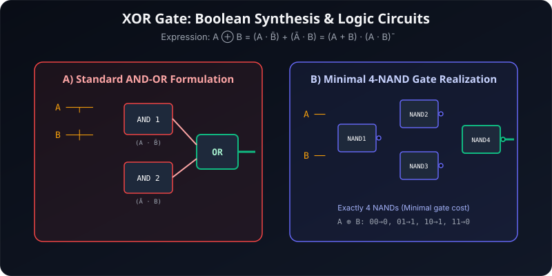
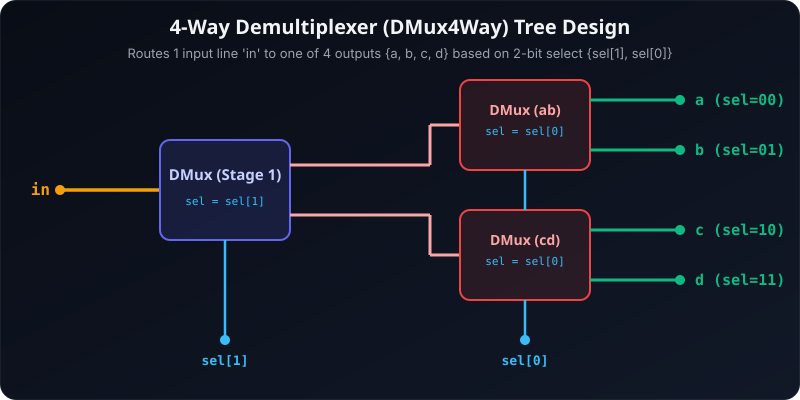
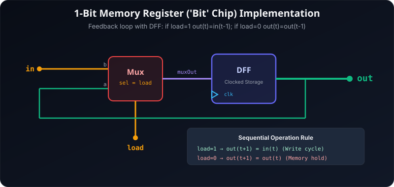

From Nand to Tetris (N2T)
Construct a fully functioning modern general-purpose computer from scratch: start with elementary Nand logic gates, build composite gates, arithmetic units (ALU), memory registers (RAM), machine language compilers, and the Hack Central Processing Unit.
18 Questions
Set A & B Solved
10 Schematics
Vector Circuit Diagrams
5 Projects
HDL Verified Implementations
3 Simulators
Logic, ALU & Disassembler
📋 University Examination Solved Papers (SET A & SET B)
All questions from sem3/N2T/Assets/Questions.txt completely solved with step-by-step mathematical proofs, truth tables, full HDL source code, circuit schematics, and ALU register traces.
-42 is 11010110₂ (Hexadecimal: 0xD6).
Step 1: Write positive magnitude in 8-bit binary:
$42_{10} = 32 + 8 + 2 = 00101010_2$
Step 2: Compute One's Complement (invert all bits):
$\sim(00101010_2) = 11010101_2$
Step 3: Add 1 to obtain Two's Complement:
$11010101_2 + 1 = 11010110_2$
Verification: $-128 \times 1 + 64 \times 1 + 32 \times 0 + 16 \times 1 + 8 \times 0 + 4 \times 1 + 2 \times 1 + 1 \times 0 = -128 + 64 + 16 + 4 + 2 = -42$. Q.E.D.
$$\overline{x \cdot y} = \bar{x} + \bar{y}$$ Similarly, the companion dual theorem states: $\overline{x + y} = \bar{x} \cdot \bar{y}$. De Morgan's laws form the mathematical backbone for converting any Boolean function into universal NAND-only or NOR-only circuit realizations.
A multiplexer with $2^n$ data inputs requires $n$ select lines to choose which input is routed to the single output line. In Nand to Tetris, standard multiplexers include Mux (2-to-1), Mux16, Mux4Way16 (4-to-1), and Mux8Way16 (8-to-1).
In Hack architecture, all numbers are 16-bit two's complement integers. The most significant bit (MSB), out[15], serves as the sign bit. Whenever out[15] == 1, the number is negative, and the ALU asserts ng = 1. Otherwise, ng = 0.
The 6-bit address is split hierarchically:
• The 3 upper bits (address[3..5]) select 1 of the 8 constituent RAM8 chips ($2^3 = 8$).
• The 3 lower bits (address[0..2]) select 1 of the 8 16-bit registers inside that chosen RAM8 chip ($2^3 = 8$).
A Full Adder takes three 1-bit inputs: $a$, $b$, and a carry-in bit $c$. It produces a 1-bit sum and a 1-bit carry-out bit.
$$\text{Sum} = a \oplus b \oplus c$$ $$\text{Carry} = (a \cdot b) + (c \cdot (a \oplus b)) = c_1 + c_2$$

Truth Table: Full Adder
| a | b | c (cin) | HA1 Sum (a⊕b) | HA1 Carry (c1) | HA2 Carry (c2) | Final Sum | Final Carry |
|---|---|---|---|---|---|---|---|
| 0 | 0 | 0 | 0 | 0 | 0 | 0 | 0 |
| 0 | 0 | 1 | 0 | 0 | 0 | 1 | 0 |
| 0 | 1 | 0 | 1 | 0 | 0 | 1 | 0 |
| 0 | 1 | 1 | 1 | 0 | 1 | 0 | 1 |
| 1 | 0 | 0 | 1 | 0 | 0 | 1 | 0 |
| 1 | 0 | 1 | 1 | 0 | 1 | 0 | 1 |
| 1 | 1 | 0 | 0 | 1 | 0 | 0 | 1 |
| 1 | 1 | 1 | 0 | 1 | 0 | 1 | 1 |
// This file is part of www.nand2tetris.org
// and the book "The Elements of Computing Systems"
// by Nisan and Schocken, MIT Press.
// File name: projects/02/FullAdder.hdl
/**
* Computes the sum of three bits.
*/
CHIP FullAdder {
IN a, b, c; // 1-bit inputs
OUT sum, // Right bit of a + b + c
carry; // Left bit of a + b + c
PARTS:
// First Half Adder computes intermediate sum and carry
HalfAdder(a=a, b=b, sum=sum1, carry=c1);
// Second Half Adder adds carry-in 'c' to intermediate sum
HalfAdder(a=sum1, b=c, sum=sum, carry=c2);
// Final carry is true if either half adder generated a carry
Or(a=c1, b=c2, out=carry);
}A set of Boolean operations is functionally complete if every possible Boolean truth function can be expressed using only gates from that set. The set $\{ \text{AND}, \text{OR}, \text{NOT} \}$ is functionally complete. If a single gate can synthesize all three operations, that gate alone is universal.
2. AND Gate from NAND: $\text{AND}(a, b) = \text{NOT}(\text{NAND}(a, b)) = \text{NAND}(\text{NAND}(a, b), \text{NAND}(a, b))$
3. OR Gate from NAND (De Morgan): $\text{OR}(a, b) = \overline{\bar{a} \cdot \bar{b}} = \text{NAND}(\text{NAND}(a, a), \text{NAND}(b, b))$

CHIP Not {
IN in;
OUT out;
PARTS:
Nand(a=in, b=in, out=out);
}CHIP And {
IN a, b;
OUT out;
PARTS:
Nand(a=a, b=b, out=nandOut);
Not(in=nandOut, out=out);
}CHIP Or {
IN a, b;
OUT out;
PARTS:
Not(in=a, out=notA);
Not(in=b, out=notB);
Nand(a=notA, b=notB, out=out);
}
A 4-Way Multiplexer selects between 4 input lines ($a, b, c, d$) using a 2-bit selection bus $\text{sel}[1..0]$. It is elegantly built as a two-stage binary tree using 3 two-way multiplexers:
• Stage 1: Mux(a=a, b=b, sel=sel[0], out=muxAB) and Mux(a=c, b=d, sel=sel[0], out=muxCD).
• Stage 2: Mux(a=muxAB, b=muxCD, sel=sel[1], out=out).

Truth Table: Mux4Way Output Verification
| sel[1] | sel[0] | Selected Input | Boolean Output Equation | Verification Functionality |
|---|---|---|---|---|
| 0 | 0 | a | out = a | sel[0]=0 picks 'a' in MuxAB; sel[1]=0 picks MuxAB |
| 0 | 1 | b | out = b | sel[0]=1 picks 'b' in MuxAB; sel[1]=0 picks MuxAB |
| 1 | 0 | c | out = c | sel[0]=0 picks 'c' in MuxCD; sel[1]=1 picks MuxCD |
| 1 | 1 | d | out = d | sel[0]=1 picks 'd' in MuxCD; sel[1]=1 picks MuxCD |
CHIP Mux4Way16 {
IN a[16], b[16], c[16], d[16], sel[2];
OUT out[16];
PARTS:
// First stage: select between (a, b) and (c, d) using LSB sel[0]
Mux16(a=a, b=b, sel=sel[0], out=muxAB);
Mux16(a=c, b=d, sel=sel[0], out=muxCD);
// Second stage: select between the two candidate outputs using MSB sel[1]
Mux16(a=muxAB, b=muxCD, sel=sel[1], out=out);
}100101₂:• Target RAM8 Chip:
RAM8 [4] (the 5th RAM8 chip, indexed 0 to 7) selected by upper 3 bits: 100₂ = 4₁₀.• Target Register within RAM8 [4]:
Register [5] (the 6th register) selected by lower 3 bits: 101₂ = 5₁₀.

Role of DMUX and MUX in RAM Design
1. Role of DMUX (DMux8Way): Responsible for write-addressing. It takes the single 1-bit incoming load signal and routes it exclusively to the selected RAM8 chip based on address[3..5], while feeding 0 to all other 7 unselected RAM8 chips. This prevents unaddressed registers from being overwritten.
2. Role of MUX (Mux8Way16): Responsible for read-addressing. All 8 RAM8 chips continuously output their addressed register values simultaneously. The Mux8Way16 receives all 8 16-bit outputs and selects only the output from the RAM8 chip addressed by address[3..5] to drive the chip's final out[16] bus.
CHIP RAM64 {
IN in[16], load, address[6];
OUT out[16];
PARTS:
// Route load signal to 1 of 8 RAM8 chips based on address[3..5]
DMux8Way(in=load, sel=address[3..5],
a=load0, b=load1, c=load2, d=load3,
e=load4, f=load5, g=load6, h=load7);
// 8 RAM8 chips, each receiving lower 3 bits address[0..2]
RAM8(in=in, load=load0, address=address[0..2], out=out0);
RAM8(in=in, load=load1, address=address[0..2], out=out1);
RAM8(in=in, load=load2, address=address[0..2], out=out2);
RAM8(in=in, load=load3, address=address[0..2], out=out3);
RAM8(in=in, load=load4, address=address[0..2], out=out4); // <-- TARGET for 100xxx
RAM8(in=in, load=load5, address=address[0..2], out=out5);
RAM8(in=in, load=load6, address=address[0..2], out=out6);
RAM8(in=in, load=load7, address=address[0..2], out=out7);
// Select the target RAM8 output using address[3..5]
Mux8Way16(a=out0, b=out1, c=out2, d=out3,
e=out4, f=out5, g=out6, h=out7,
sel=address[3..5], out=out);
}Flags: $\mathbf{zr = 1}$ if $y == 0$, else $\mathbf{0}$; $\mathbf{ng = 1}$ if $-y < 0$ (i.e. $y > 0$).

Step-by-Step Trace Through the 6 Control Bits
| Stage | Control Bit | Active Value | Operation & Algebraic Effect | 16-Bit Example ($x=000F_{16}, y=0005_{16}$) |
|---|---|---|---|---|
| 1 | zx | 1 | Zero the $x$ input: $x_1 = 0$ | $0000\ 0000\ 0000\ 0000_2$ ($0$) |
| 2 | nx | 1 | Negate the $x$ input: $x_2 = !x_1 = !0$ | $1111\ 1111\ 1111\ 1111_2$ ($-1$) |
| 3 | zy | 0 | Pass $y$ through unmodified: $y_1 = y$ | $0000\ 0000\ 0000\ 0101_2$ ($+5$) |
| 4 | ny | 0 | Pass $y_1$ unmodified: $y_2 = y_1 = y$ | $0000\ 0000\ 0000\ 0101_2$ ($+5$) |
| 5 | f | 1 | Perform 16-bit Addition: $x_2 + y_2 = (-1) + y = y - 1$ | $(-1) + 5 = +4 = 0000\ 0000\ 0000\ 0100_2$ |
| 6 | no | 1 | Bitwise invert output: $out = !(y - 1)$ | $!(+4) = 1111\ 1111\ 1111\ 1011_2$ ($-5$) |
Proof of Two's Complement Negation: In two's complement integer arithmetic, bitwise NOT satisfies $\sim A = -A - 1$. Therefore: $$!(y - 1) = -(y - 1) - 1 = -y + 1 - 1 = \mathbf{-y}$$ Hence, for $y = +5$, $out = -5 = \text{0xFFFB}$.
Condition Flags Evaluation:
• zr (Zero Flag): Raised to 1 only when all 16 bits of output are 0 (which occurs only if $y = 0$). Here, $out = -5 \neq 0 \implies \mathbf{zr = 0}$.
• ng (Negative Flag): Matches sign bit out[15]. For negative numbers, out[15] == 1. Since $-5 < 0$, $\mathbf{ng = 1}$.
$$\mathbf{reset} \text{ (Highest Priority)} \;\;>\;\; \mathbf{load} \text{ (Medium Priority)} \;\;>\;\; \mathbf{inc} \text{ (Lowest Priority)} \;\;>\;\; \text{No-op (Retain state)}$$ Simultaneous Assertion Result: When
reset = 1, load = 1, inc = 1 all together, the reset signal takes absolute precedence. The Program Counter outputs:
$$\mathbf{out(t+1) = 0000\ 0000\ 0000\ 0000_2 \;\; (0)}$$

Functionality Truth Table: Program Counter Logic
| reset | load | inc | Output at next clock tick $out(t+1)$ | Operational Role |
|---|---|---|---|---|
| 1 | 1 | 1 | 0 (Reset to ROM address 0) | Reset overrides both load and inc |
| 1 | X | X | 0 | System Boot / Program Restart |
| 0 | 1 | X | in(t) | Branch / JUMP instruction (@addr, JMP) |
| 0 | 0 | 1 | out(t) + 1 | Sequential execution (Fetch next instruction) |
| 0 | 0 | 0 | out(t) | Hold current program counter address |
CHIP PC {
IN in[16], load, inc, reset;
OUT out[16];
PARTS:
// Increment the previous value
Inc16(in=feedback, out=pcPlus1);
// Priority 3 (Lowest): Increment
Mux16(a=feedback, b=pcPlus1, sel=inc, out=afterInc);
// Priority 2 (Medium): Load new jump address
Mux16(a=afterInc, b=in, sel=load, out=afterLoad);
// Priority 1 (Highest): Reset to 0 overrides everything
Mux16(a=afterLoad, b=false, sel=reset, out=toRegister);
// Any control signal triggers write to register
Or(a=load, b=inc, out=loadOrInc);
Or(a=loadOrInc, b=reset, out=loadRegister);
// 16-Bit Clocked Register stores state
Register(in=toRegister, load=loadRegister, out=out, out=feedback);
}
In Boolean logic:
• If $A = 0 \implies 0 + 1 = 1$.
• If $A = 1 \implies 1 + 1 = 1$.
Since any input ORed with 1 is true regardless of the variable $A$, $A + 1 = 1$. The dual law is $A \cdot 0 = 0$.
In the Nand to Tetris Hardware Description Language (HDL), chip declarations start with CHIP <Name> { IN <pin_list>; OUT <pin_list>; PARTS: ... }. Example: IN in[16], load, address[6];.
A 2-to-1 multiplexer has inputs $a, b$ and a selection pin $sel$. When $sel = 0$, $out = a$; when $sel = 1$, $out = b$. Boolean formula: $out = (a \cdot \overline{sel}) + (b \cdot sel)$.
The zr flag is asserted (zr = 1) if and only if all 16 bits of the ALU output are 0 ($out == 0$). It is implemented in HDL by feeding the 16 output bits into two Or8Way chips followed by a Nor gate: zr = !(Or8Way(out[0..7]) | Or8Way(out[8..15])).
A Half Adder adds two 1-bit operands ($a$ and $b$). It has no carry-in input ($c_{in}$). Outputs are $\text{sum} = a \oplus b$ and $\text{carry} = a \cdot b$.
The 16-bit adder (Add16) computes the 16-bit sum of two two's complement numbers $a[16]$ and $b[16]$. In standard hardware architecture, it is implemented as a Ripple-Carry Adder cascading 16 FullAdders in sequence:
• Bit 0: FullAdder(a=a[0], b=b[0], c=false, sum=out[0], carry=c1) (or a HalfAdder).
• Bit $i$: FullAdder(a=a[i], b=b[i], c=c_{i}, sum=out[i], carry=c_{i+1}).
• Overflow carry ($c_{16}$) from MSB bit 15 is dropped according to standard two's complement rules.

CHIP Add16 {
IN a[16], b[16];
OUT out[16];
PARTS:
// Bit 0: carry-in is hardwired to 0 (false)
FullAdder(a=a[0], b=b[0], c=false, sum=out[0], carry=c1);
FullAdder(a=a[1], b=b[1], c=c1, sum=out[1], carry=c2);
FullAdder(a=a[2], b=b[2], c=c2, sum=out[2], carry=c3);
FullAdder(a=a[3], b=b[3], c=c3, sum=out[3], carry=c4);
FullAdder(a=a[4], b=b[4], c=c4, sum=out[4], carry=c5);
FullAdder(a=a[5], b=b[5], c=c5, sum=out[5], carry=c6);
FullAdder(a=a[6], b=b[6], c=c6, sum=out[6], carry=c7);
FullAdder(a=a[7], b=b[7], c=c7, sum=out[7], carry=c8);
FullAdder(a=a[8], b=b[8], c=c8, sum=out[8], carry=c9);
FullAdder(a=a[9], b=b[9], c=c9, sum=out[9], carry=c10);
FullAdder(a=a[10], b=b[10], c=c10, sum=out[10], carry=c11);
FullAdder(a=a[11], b=b[11], c=c11, sum=out[11], carry=c12);
FullAdder(a=a[12], b=b[12], c=c12, sum=out[12], carry=c13);
FullAdder(a=a[13], b=b[13], c=c13, sum=out[13], carry=c14);
FullAdder(a=a[14], b=b[14], c=c14, sum=out[14], carry=c15);
// Bit 15 (MSB): final carry is ignored in Hack two's complement specification
FullAdder(a=a[15], b=b[15], c=c15, sum=out[15], carry=drop);
}
Truth Table: 2-Input XOR Gate
| A | B | NOT A | NOT B | A AND (NOT B) | (NOT A) AND B | Output (A ⊕ B) |
|---|---|---|---|---|---|---|
| 0 | 0 | 1 | 1 | 0 | 0 | 0 |
| 0 | 1 | 1 | 0 | 0 | 1 | 1 |
| 1 | 0 | 0 | 1 | 1 | 0 | 1 |
| 1 | 1 | 0 | 0 | 0 | 0 | 0 |
CHIP Xor {
IN a, b;
OUT out;
PARTS:
Not(in=a, out=notA);
Not(in=b, out=notB);
And(a=a, b=notB, out=aAndNotB);
And(a=notA, b=b, out=notAAndB);
Or(a=aAndNotB, b=notAAndB, out=out);
}A 4-way Demultiplexer takes a single input line $in$ and directs it to exactly one of 4 outputs ($a, b, c, d$) chosen by 2 select bits $\text{sel}[1..0]$. The remaining three outputs are held at 0.
$$a = in \cdot \overline{sel[1]} \cdot \overline{sel[0]}$$ $$b = in \cdot \overline{sel[1]} \cdot sel[0]$$ $$c = in \cdot sel[1] \cdot \overline{sel[0]}$$ $$d = in \cdot sel[1] \cdot sel[0]$$

Truth Table: DMux4Way Output Verification
| in | sel[1] | sel[0] | a | b | c | d | Functional State |
|---|---|---|---|---|---|---|---|
| in | 0 | 0 | in | 0 | 0 | 0 | Channel A active |
| in | 0 | 1 | 0 | in | 0 | 0 | Channel B active |
| in | 1 | 0 | 0 | 0 | in | 0 | Channel C active |
| in | 1 | 1 | 0 | 0 | 0 | in | Channel D active |
CHIP DMux4Way {
IN in, sel[2];
OUT a, b, c, d;
PARTS:
// Stage 1: split 'in' into upper and lower pairs using MSB sel[1]
DMux(in=in, sel=sel[1], a=topPair, b=bottomPair);
// Stage 2: route upper pair to a and b using LSB sel[0]
DMux(in=topPair, sel=sel[0], a=a, b=b);
// Stage 2: route lower pair to c and d using LSB sel[0]
DMux(in=bottomPair, sel=sel[0], a=c, b=d);
}The D-Flip-Flop (DFF) is the foundational elementary sequential memory primitive in digital systems. Unlike combinational gates whose outputs respond instantaneously to input changes, the DFF is an edge-triggered clocked storage device that samples its input $D$ on the active clock transition and holds that value until the next clock cycle: $$out(t) = in(t - 1)$$
• State Retention: Provides memory to store past events, forming the basis for registers, counters, and RAM.
• Clock Synchronization: Divides physical continuous time into discrete clock cycles ($t, t+1$), eliminating combinational race conditions and signal hazards.
• Feedback Stabilization: Enables feedback loops that would otherwise cause infinite oscillations in purely combinational logic.

Behavioral Equation of the 1-Bit 'Bit' Chip
$$out(t) = \begin{cases} in(t-1), & \text{if } load(t-1) == 1 \quad \text{(Write / Update cycle)} \\ out(t-1), & \text{if } load(t-1) == 0 \quad \text{(Hold / Memory retention)} \end{cases}$$
CHIP Bit {
IN in, load;
OUT out;
PARTS:
// Mux selects between keeping current state (dffOut) or loading new value (in)
Mux(a=dffOut, b=in, sel=load, out=muxOut);
// DFF stores selected bit on clock edge and feeds back to Mux
DFF(in=muxOut, out=dffOut, out=out);
}Note on Standard Hack ISA: If $no$ were $1$, the result would be $!(-y - 2) = y + 1$. With $no = 0$, the raw addition result is preserved.
Status Flags: $\mathbf{zr = 1}$ iff $-y - 2 == 0 \implies y = -2$; $\mathbf{ng = 1}$ iff $-y - 2 < 0 \implies y > -2$.
Sequential Control Bit Trace Table
| Step | Control Pin | State | Intermediate Value Computed | Binary Interpretation ($y = 0003_{16}$) |
|---|---|---|---|---|
| 1 | zx | 1 | $x_1 = 0$ | $0000\ 0000\ 0000\ 0000_2$ |
| 2 | nx | 1 | $x_2 = !x_1 = !0$ | $1111\ 1111\ 1111\ 1111_2$ ($-1$) |
| 3 | zy | 0 | $y_1 = y$ | $0000\ 0000\ 0000\ 0011_2$ ($+3$) |
| 4 | ny | 1 | $y_2 = !y_1 = !y$ | $1111\ 1111\ 1111\ 1100_2$ ($-4$) |
| 5 | f | 1 | Perform addition: $x_2 + y_2 = (-1) + (!y)$ | $(-1) + (-4) = -5 = 1111\ 1111\ 1111\ 1011_2$ |
| 6 | no | 0 | Do not invert output: $out = x_2 + y_2$ | $\mathbf{-5} = \text{0xFFFB}$ |
Algebraic Derivation: In two's complement, the bitwise complement is related to the negative by $!y = -y - 1$.
$$\text{Sum} = x_2 + y_2 = (-1) + (!y) = (-1) + (-y - 1) = \mathbf{-y - 2}$$
For example, if $y = 3$:
$$out = -3 - 2 = -5 = 1111\ 1111\ 1111\ 1011_2$$
Flags:
• zr = 0 (since $-5 \neq 0$).
• ng = 1 (sign bit out[15] == 1, indicating a negative value).
The Program Counter (PC) is a 16-bit sequential chip responsible for tracking the memory address of the next instruction to be fetched from ROM32K in the Hack Computer. It updates synchronously on every clock cycle according to execution flow:
• 1. increment (inc): Advances execution to the next instruction in memory ($PC \leftarrow PC + 1$). Used for normal linear program execution.
• 2. load (load): Forces the PC to branch to the address present on the input bus $in[16]$ ($PC \leftarrow in$). Triggered during jump instructions (e.g.
@LABEL; 0;JMP or conditional jumps like JGT, JEQ when condition flags match).• 3. reset (reset): Resets the PC to address 0 ($PC \leftarrow 0$). Used on system boot, hardware power-on, or reset button press so execution restarts at ROM address 0.
CHIP PC {
IN in[16], load, inc, reset;
OUT out[16];
PARTS:
Inc16(in=currVal, out=plusOne);
Mux16(a=currVal, b=plusOne, sel=inc, out=outInc);
Mux16(a=outInc, b=in, sel=load, out=outLoad);
Mux16(a=outLoad, b=false, sel=reset, out=nextVal);
Or(a=load, b=inc, out=ldOrInc);
Or(a=ldOrInc, b=reset, out=loadFlag);
Register(in=nextVal, load=loadFlag, out=out, out=currVal);
}⚡ Interactive Hardware Sandbox & Emulators
1. Interactive Logic Gate & HDL Sandbox
CHIP Nand { IN a, b; OUT out; }2. Hack ALU 6-Bit Control Matrix Simulator
Toggle any of the 6 ALU control flags or choose a preset operation. Test two's complement integer arithmetic and condition flag behaviour ($zr$, $ng$) in real time.
3. Hack Assembly & Opcode Visualizer
Type an A-instruction (e.g., @256) or C-instruction (e.g., D=D+M;JGT, M=0, 0;JMP) to view the binary bit decomposition:
🛠️ Projects 1–5 Hardware Description Language (HDL) Specifications
Complete specification contracts, chip interfaces, and architecture summaries for all hardware projects in the Nand to Tetris curriculum.
Boolean Logic & Elementary Gates
Construct 15 elementary and multi-bit logic gates starting solely from the primitive universal NAND gate.
CHIP Mux {
IN a, b, sel;
OUT out;
PARTS:
Not(in=sel, out=notSel);
And(a=a, b=notSel, out=w1);
And(a=b, b=sel, out=w2);
Or(a=w1, b=w2, out=out);
}Boolean Arithmetic & The ALU
Combinational arithmetic chips culminating in the complete 16-bit Hack Arithmetic Logic Unit with status condition flags.
CHIP Inc16 {
IN in[16];
OUT out[16];
PARTS:
Add16(a=in, b[0]=true, b[1..15]=false, out=out);
}Sequential Logic & Memory Hierarchy
Transition from combinational circuits to clocked memory. Build registers, RAM units from RAM8 to RAM16K, and the Program Counter.
CHIP RAM8 {
IN in[16], load, address[3];
OUT out[16];
PARTS:
DMux8Way(in=load, sel=address, a=l0, b=l1, c=l2, d=l3, e=l4, f=l5, g=l6, h=l7);
Register(in=in, load=l0, out=r0);
Register(in=in, load=l1, out=r1);
Register(in=in, load=l2, out=r2);
Register(in=in, load=l3, out=r3);
Register(in=in, load=l4, out=r4);
Register(in=in, load=l5, out=r5);
Register(in=in, load=l6, out=r6);
Register(in=in, load=l7, out=r7);
Mux8Way16(a=r0, b=r1, c=r2, d=r3, e=r4, f=r5, g=r6, h=r7, sel=address, out=out);
}Machine Language & Memory-Mapped I/O
Low-level assembly programming in the Hack ISA. Manipulate the 256x512 screen pixel memory map and poll keyboard keystrokes.
// Mult.asm: R2 = R0 * R1
@R2
M=0 // R2 = 0
(LOOP)
@R1
D=M
@END
D;JLE // if R1 <= 0 goto END
@R0
D=M
@R2
M=M+D // R2 = R2 + R0
@R1
M=M-1 // R1 = R1 - 1
@LOOP
0;JMP
(END)
@END
0;JMPComputer Architecture & The Hack CPU
Top-level computer integration: CPU instruction decoding, Address/Data register clocking, Memory tri-partite mapping, and ROM32K execution cycle.
CHIP CPU {
IN inM[16], // M value input (M = contents of RAM[A])
instruction[16], // Instruction for execution
reset; // Signals whether to restart current program (reset==1)
OUT outM[16], // M value output
writeM, // Write to M?
addressM[15], // Address in data memory (of M)
pc[15]; // address of next instruction
PARTS:
// Decode instruction: instruction[15]==0 is A-instruction, 1 is C-instruction
Not(in=instruction[15], out=isA);
Not(in=isA, out=isC);
// A-Register input multiplexer
And(a=isC, b=instruction[5], out=aluToA);
Mux16(a=instruction, b=aluOut, sel=aluToA, out=aRegIn);
Or(a=isA, b=aluToA, out=loadA);
ARegister(in=aRegIn, load=loadA, out=aOut, out[0..14]=addressM);
// ALU input multiplexer (A vs M) based on 'a' bit instruction[12]
Mux16(a=aOut, b=inM, sel=instruction[12], out=aluInputY);
// D-Register
And(a=isC, b=instruction[4], out=loadD);
DRegister(in=aluOut, load=loadD, out=dOut);
// Hack ALU
ALU(x=dOut, y=aluInputY, zx=instruction[11], nx=instruction[10],
zy=instruction[9], ny=instruction[8], f=instruction[7], no=instruction[6],
out=aluOut, out=outM, zr=zr, ng=ng);
// Write to memory
And(a=isC, b=instruction[3], out=writeM);
// Jump Evaluation
Or(a=zr, b=ng, out=lte);
Not(in=lte, out=gt);
And(a=instruction[0], b=gt, out=jgt);
And(a=instruction[1], b=zr, out=jeq);
And(a=instruction[2], b=ng, out=jlt);
Or(a=jgt, b=jeq, out=j1);
Or(a=j1, b=jlt, out=jumpCond);
And(a=isC, b=jumpCond, out=loadPC);
Not(in=loadPC, out=incPC);
// Program Counter
PC(in=aOut, load=loadPC, inc=incPC, reset=reset, out[0..14]=pc);
}⚡ High-Yield Computer Architecture Manual (;short-revision;)
Comparative matrices, architectural trade-offs, ALU truth tables, and machine instruction references for university examinations.
⚖️ 1. Combinational vs Sequential Logic
| Attribute | Combinational | Sequential |
|---|---|---|
| Output dependency | Current inputs only | Current inputs + Past state |
| Memory elements | None (memoryless) | DFF, Flip-Flops, Registers |
| Clock dependency | No clock required | Synchronized to clock tick/tock |
| Feedback loops | Not permitted (oscillates) | Fundamental to state holding |
| Examples | Adders, MUX, ALU | RAM, Bit, PC, CPU Registers |
🏛️ 2. Harvard vs Von Neumann Architecture
| Feature | Von Neumann | Harvard (Hack Computer) |
|---|---|---|
| Memory layout | Unified data & code | Separate code (ROM) & data (RAM) |
| Bus structure | Shared data/instruction bus | Dedicated instruction & data buses |
| Simultaneous access | No (Von Neumann bottleneck) | Yes: fetch instruction & read data simultaneously |
| Self-modifying code | Allowed | Forbidden (ROM is strictly read-only) |
| Hack implementation | Modern x86 systems | ROM32K (instruction) + RAM16K (data) |
🖥️ 3. Memory-Mapped vs Port-Mapped I/O
| Attribute | Memory-Mapped I/O (Hack) | Port-Mapped (Isolated) I/O |
|---|---|---|
| Address space | Shared with primary RAM | Separate dedicated I/O address space |
| CPU Instructions | Standard memory instructions (M=...) | Special CPU instructions (IN, OUT) |
| Hardware simplicity | High (reuses memory bus) | Lower (requires separate I/O decoding lines) |
| Hack mapping | Screen: 16384–24575, KBD: 24576 | Not used in Hack architecture |
⚙️ 4. RISC vs CISC Characteristics
| Dimension | Hack Computer Characteristic | Architecture Class |
|---|---|---|
| Instruction width | Strictly fixed 16-bit width | RISC |
| Instruction types | Only 2 formats: A-inst & C-inst | RISC |
| Addressing modes | Direct memory addressing via A-register | RISC (Load/Store model) |
| Clock cycles | 1 instruction per cycle | RISC |
| Control logic | Hardwired combinational multiplexers | RISC |
The Complete 18-Function Hack ALU Truth Table
| zx | nx | zy | ny | f | no | Output Function | Operation Description | Exam Question Mapping |
|---|---|---|---|---|---|---|---|---|
| 1 | 0 | 1 | 0 | 1 | 0 | 0 | Constant 0 | Clear register |
| 1 | 1 | 1 | 1 | 1 | 1 | 1 | Constant 1 | Boolean True |
| 1 | 1 | 1 | 0 | 1 | 0 | -1 | Constant -1 (0xFFFF) | All bits high |
| 0 | 0 | 1 | 1 | 0 | 0 | x | Pass x through | Direct register transfer |
| 1 | 1 | 0 | 0 | 0 | 0 | y | Pass y through | Direct memory/A transfer |
| 0 | 0 | 1 | 1 | 0 | 1 | !x | Bitwise NOT x | One's complement of x |
| 1 | 1 | 0 | 0 | 0 | 1 | !y | Bitwise NOT y | One's complement of y |
| 0 | 0 | 1 | 1 | 1 | 1 | -x | Arithmetic Negate x | Two's complement of x |
| 1 | 1 | 0 | 0 | 1 | 1 | -y | Arithmetic Negate y | ★ SET A 10MM Q2(a) |
| 0 | 1 | 1 | 1 | 1 | 1 | x + 1 | Increment x | Pointer/loop increment |
| 1 | 1 | 0 | 1 | 1 | 1 | y + 1 | Increment y | Pointer/loop increment |
| 0 | 0 | 1 | 1 | 1 | 0 | x - 1 | Decrement x | Countdown timer |
| 1 | 1 | 0 | 0 | 1 | 0 | y - 1 | Decrement y | Countdown timer |
| 0 | 0 | 0 | 0 | 1 | 0 | x + y | 16-bit Addition | Arithmetic addition |
| 0 | 1 | 0 | 0 | 1 | 1 | x - y | Subtraction (x - y) | Comparison / subtraction |
| 0 | 0 | 0 | 1 | 1 | 1 | y - x | Subtraction (y - x) | Comparison / subtraction |
| 0 | 0 | 0 | 0 | 0 | 0 | x & y | Bitwise AND | Bit masking |
| 0 | 1 | 0 | 1 | 0 | 1 | x | y | Bitwise OR | Bit setting |
🖼️ Original Source Assets & Circuit Schematics Gallery
Click any schematic card to inspect it in full high-resolution inside the optical lightbox modal.
full_adder_circuit.svg
Full Adder circuit using two half adders and one OR gate. Set A 5MM Q1.
nand_functional_completeness.svg
Derivation of NOT, AND, and OR gates exclusively from NAND gates. Set A 5MM Q2.
mux4way_circuit.svg
4-to-1 Multiplexer tree built from 3 two-way multiplexers. Set A 10MM Q1(a).
ram64_hierarchy.svg
6-bit address decoding (100101₂) identifying target RAM8 [4] and Register [5]. Set A 10MM Q1(b).
hack_alu_datapath.svg
6-bit ALU datapath with zx, nx, zy, ny, f, no multiplexers and status flags. Set A & B 10MM Q2(a).
hack_pc_circuit.svg
Program Counter priority arbitration cascade (reset > load > inc). Set A & B 10MM Q2(b).
add16_ripple_carry.svg
16 FullAdders in ripple-carry cascade for 16-bit integer addition. Set B 5MM Q1.
xor_logic_diagram.svg
Standard AND-OR-NOT and minimal 4-NAND implementations of XOR gate. Set B 5MM Q2.
dmux4way_circuit.svg
4-way demultiplexer tree routing input 'in' to one of 4 outputs. Set B 10MM Q1(a).
bit_register_circuit.svg
1-bit register memory cell combining D-Flip-Flop and Multiplexer write gate. Set B 10MM Q1(b).
Original Examination Question Paper (Questions.txt)
Nand to Tetris
SET-A
1MM
1) The 8 bit whose compliment representation of -42 is :
2) The law stating NOT(x and y)=Not x or NOT y is known as______________ law :
3) The chip that routes one of several input signals to a single output line is called___________:
4) Name the flag raised by the HACKALU whenever its output is negative__________:
5) A RAM64 chip requires _________________ address bits to access any one of its resistors.
5MM
1) Construct a FULL adder using 2 Half adders and one OR gate? Explain its working and write HDL code?
(OR)
Justify why Nand is called functionally complete gate by deriving AND gate and OR gate from Nand gate alone with logic diagram and HDL code?
10MM
1) a) Design a multiplexer (MUX 4-way). Write the truth table and verify the output for all select lines combinations? (5MM)
b) A RAM-64 chip is built from 8RAM-8 chips for the address 100101 6bits. Identify the target RAM8 chip and the resistor within it? State the role of DMUX and MUX?
(OR)
2)a)Explain the hack ALU structure with a block diagram for the control bits zx=1, nx=1, zy=0, ny=0, f=1 and no=1. Trace each bit in sequence and determine the output with the zr and ng flags? (Hint: Take any value of x in 16 bit form ),
b) Draw the block diagram of hack programme counter. State the priority order of the reset, load increment and increment signals and explain what the programme counter outputs when all three are asserted together.
SET B
1-MM
If Boolean algebra (A+1) is always equal to_________________________________.
In Nand to Tetris HDL what keyboard is used to define the inputs of a chip____________________________.
Name the chip is used to select one of two inputs based on a control bit______________________________.
Name the flag raised by the hack ALU whenever its output bits are all zero________________________.
A circuit that adds two single bits and produce a summon carry but does not accept carry in is__________________.
5MM
Design and implement a 16 bit adder. Explain its working and write HDL code.
(OR)
Design a two input XOR gate by drawing its logic circuit diagrams. Write its Boolean expression and truth table and implement and verify its functionally using HDL code?
10 MM
1) a. Design a D multiplexer. Write the truth table and verify the output for all select lines combination.
b. Explain D flipflop. Mention its working and role in sequential logic. Write the HDL code to implement bit chip in Nand to Tetris using a D flip flop
(OR)
2) A. The hack ALU receives the control bits that x=1 NY=1 ZY=0 NY=1 F=1 O=0. Trace the affect of each control bit in sequence. Determine the final output and the values of zr and mg flags.
B. Design and explain the functionality of programme counter chip used in hack computer or architecture. Explain the role of load increment and reset signal in programme counter.